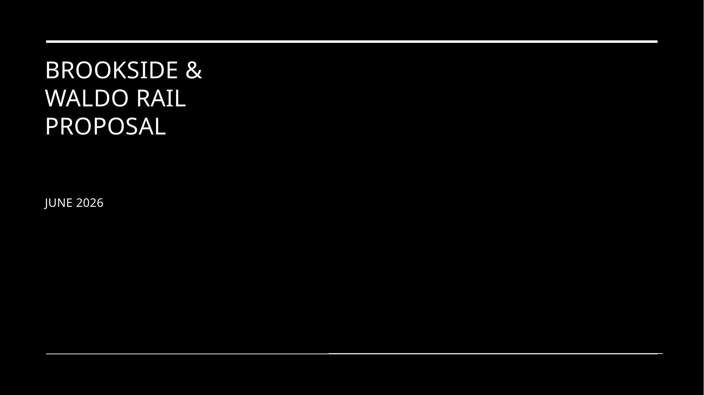
Waldo Extension
Brookside & Waldo Rail Proposal
A scrolling web presentation adapted from the uploaded pitch deck. The initial website load redirects here.
3.6 milesUMKC / 51st Street to Waldo / 79th Street
Slide 02
I. Grounded In History
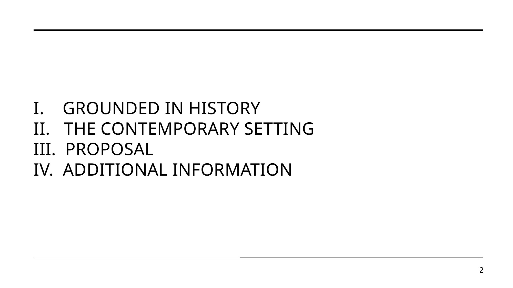
Read slide text
I. GROUNDED IN HISTORY II. THE CONTEMPORARY SETTING III. PROPOSAL IV. ADDITIONAL INFORMATION
Slide 03
I. Grounded In History
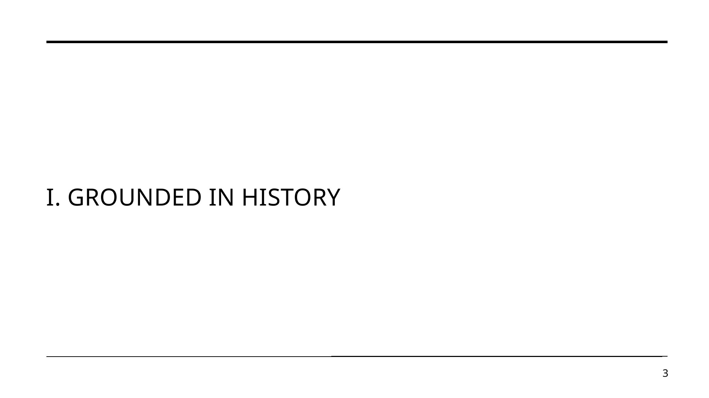
Read slide text
I. GROUNDED IN HISTORY
Slide 04
Overview
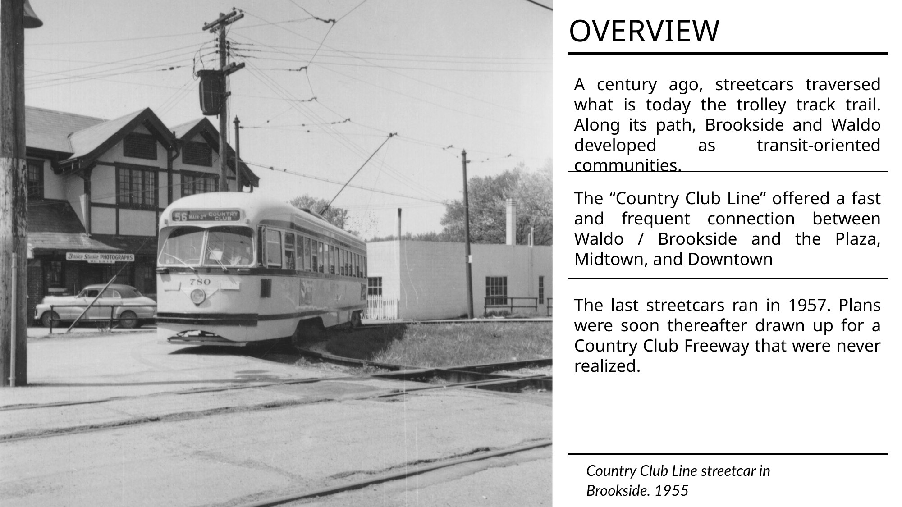
Read slide text
OVERVIEW A century ago, streetcars traversed what is today the trolley track trail. Along its path, Brookside and Waldo developed as transit-oriented communities. The “Country Club Line” offered a fast and frequent connection between Waldo / Brookside and the Plaza, Midtown, and Downtown The last streetcars ran in 1957. Plans were soon thereafter drawn up for a Country Club Freeway that were never realized. Country Club Line streetcar in Brookside. 1955
Slide 05
1 2 1. Streetcar traverses the
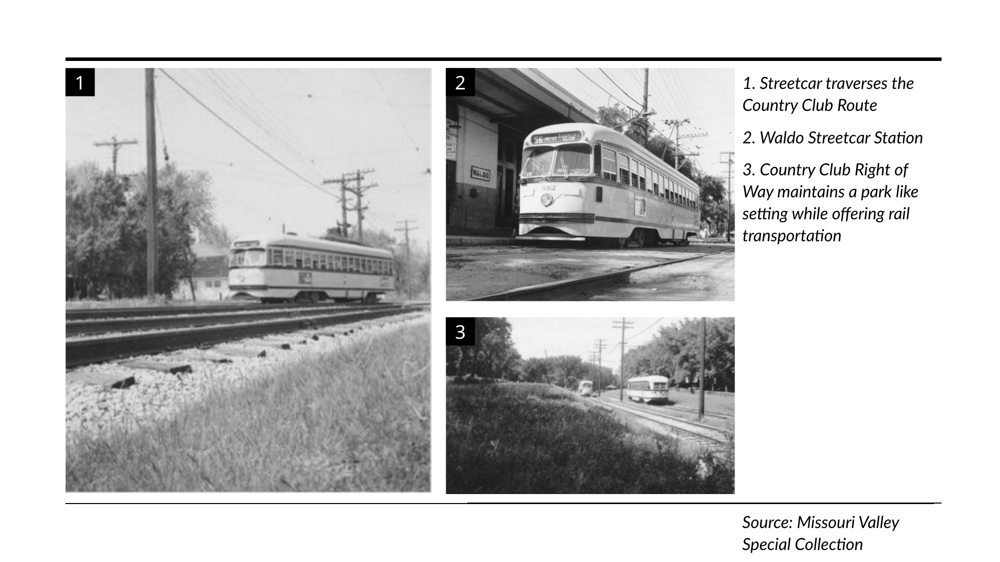
Read slide text
1 2 1. Streetcar traverses the Country Club Route 2. Waldo Streetcar Station 3. Country Club Right of Way maintains a park like setting while offering rail transportation 3 Source: Missouri Valley Special Collection
Slide 06
Ii. The Contemporary
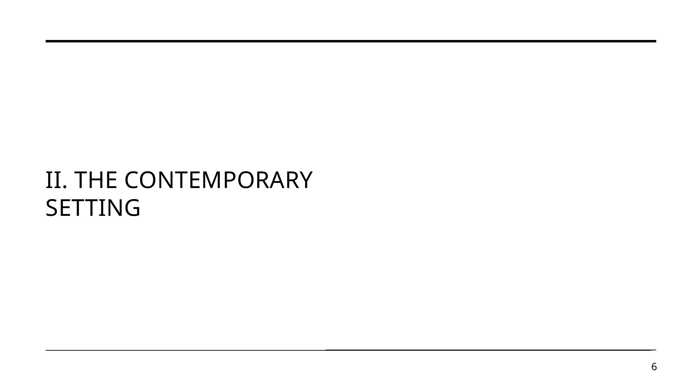
Read slide text
II. THE CONTEMPORARY SETTING
Slide 07
The Time Is Right To Reconnect Brookside -
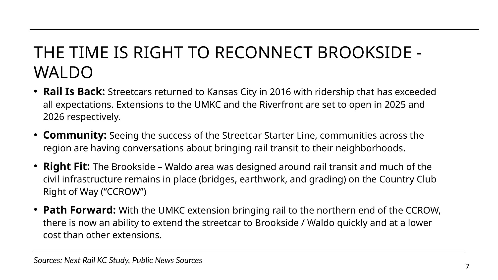
Read slide text
THE TIME IS RIGHT TO RECONNECT BROOKSIDE - WALDO • Rail Is Back: Streetcars returned to Kansas City in 2016 with ridership that has exceeded all expectations. Extensions to the UMKC and the Riverfront are set to open in 2025 and 2026 respectively. • Community: Seeing the success of the Streetcar Starter Line, communities across the region are having conversations about bringing rail transit to their neighborhoods. • Right Fit: The Brookside – Waldo area was designed around rail transit and much of the civil infrastructure remains in place (bridges, earthwork, and grading) on the Country Club Right of Way (“CCROW”) • Path Forward: With the UMKC extension bringing rail to the northern end of the CCROW, there is now an ability to extend the streetcar to Brookside / Waldo quickly and at a lower cost than other extensions. Sources: Next Rail KC Study, Public News Sources
Slide 08
Expanding The
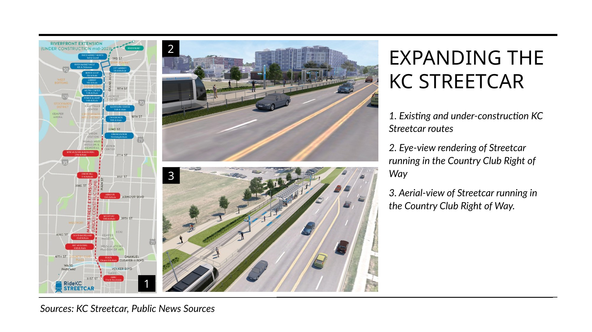
Read slide text
2 EXPANDING THE KC STREETCAR 1. Existing and under-construction KC Streetcar routes 2. Eye-view rendering of Streetcar running in the Country Club Right of 3 Way 3. Aerial-view of Streetcar running in the Country Club Right of Way. 1 Sources: KC Streetcar, Public News Sources
Slide 09
Kansas City Riverfront Extension
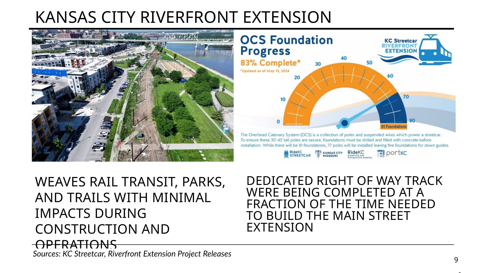
Read slide text
KANSAS CITY RIVERFRONT EXTENSION WEAVES RAIL TRANSIT, PARKS, DEDICATED RIGHT OF WAY TRACK AND TRAILS WITH MINIMAL WERE BEING COMPLETED AT A FRACTION OF THE TIME NEEDED IMPACTS DURING TO BUILD THE MAIN STREET CONSTRUCTION AND EXTENSION OPERATIONS Sources: KC Streetcar, Riverfront Extension Project Releases
Slide 10
St. Louis Metrolink
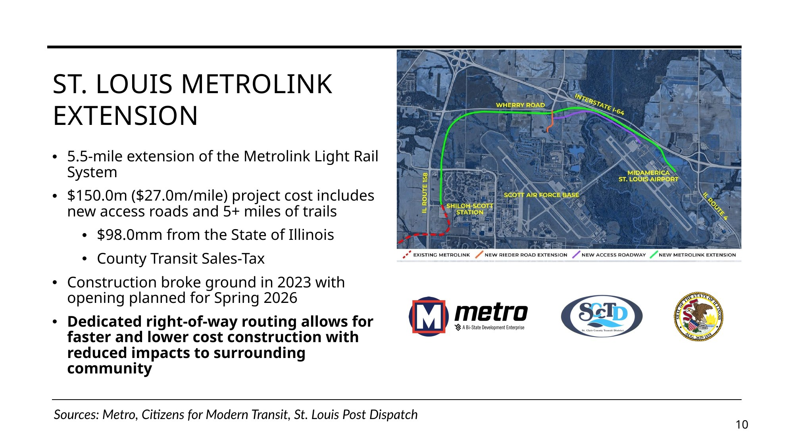
Read slide text
ST. LOUIS METROLINK EXTENSION • 5.5-mile extension of the Metrolink Light Rail System • $150.0m ($27.0m/mile) project cost includes new access roads and 5+ miles of trails • $98.0mm from the State of Illinois • County Transit Sales-Tax • Construction broke ground in 2023 with opening planned for Spring 2026 • Dedicated right-of-way routing allows for faster and lower cost construction with reduced impacts to surrounding community Sources: Metro, Citizens for Modern Transit, St. Louis Post Dispatch
Slide 11
St. Louis Metrolink Extension
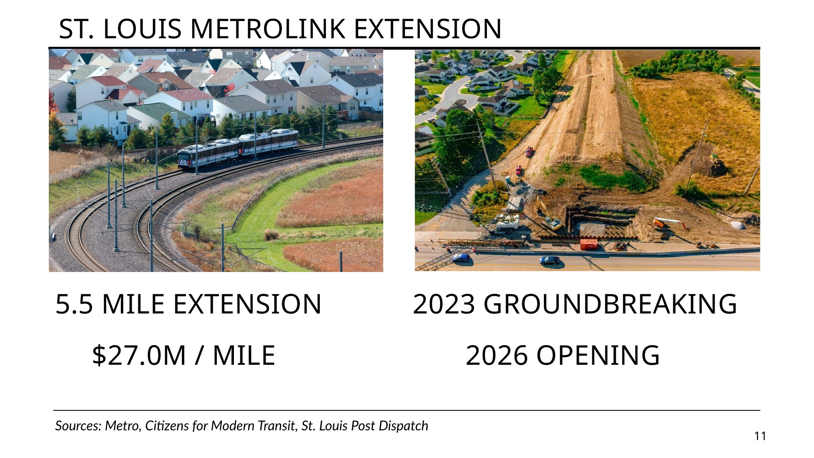
Read slide text
ST. LOUIS METROLINK EXTENSION 5.5 MILE EXTENSION 2023 GROUNDBREAKING $27.0M / MILE 2026 OPENING Sources: Metro, Citizens for Modern Transit, St. Louis Post Dispatch
Slide 12
What Does This Mean?
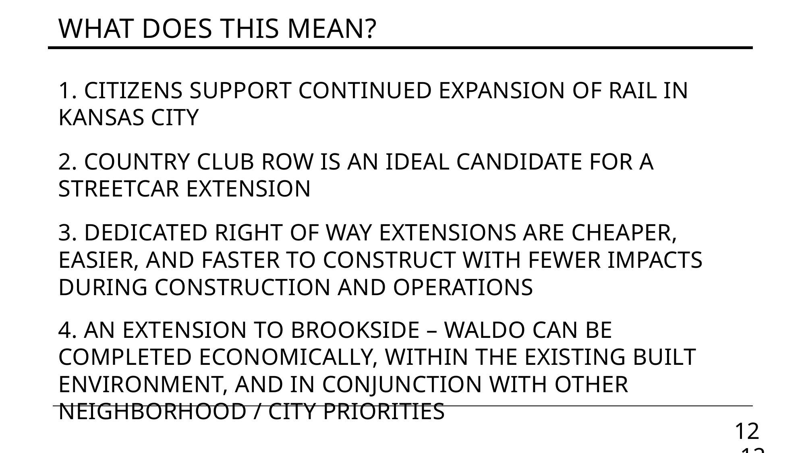
Read slide text
WHAT DOES THIS MEAN? 1. CITIZENS SUPPORT CONTINUED EXPANSION OF RAIL IN KANSAS CITY 2. COUNTRY CLUB ROW IS AN IDEAL CANDIDATE FOR A STREETCAR EXTENSION 3. DEDICATED RIGHT OF WAY EXTENSIONS ARE CHEAPER, EASIER, AND FASTER TO CONSTRUCT WITH FEWER IMPACTS DURING CONSTRUCTION AND OPERATIONS 4. AN EXTENSION TO BROOKSIDE – WALDO CAN BE COMPLETED ECONOMICALLY, WITHIN THE EXISTING BUILT ENVIRONMENT, AND IN CONJUNCTION WITH OTHER NEIGHBORHOOD / CITY PRIORITIES
Slide 13
Iii. The Proposal
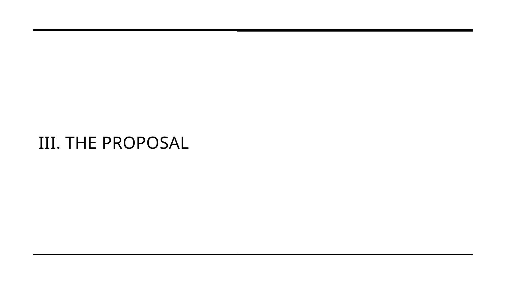
Read slide text
III. THE PROPOSAL
Slide 14
A Plan For Brookside - Waldo
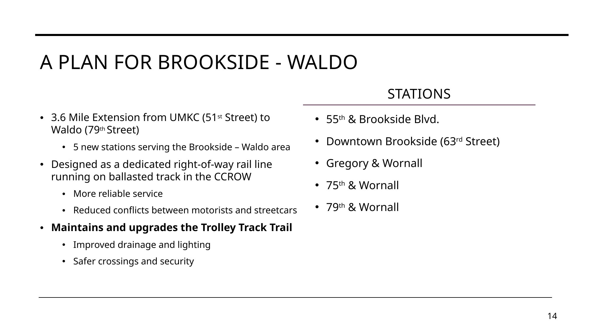
Read slide text
A PLAN FOR BROOKSIDE - WALDO STATIONS • 3.6 Mile Extension from UMKC (51st Street) to • 55th & Brookside Blvd. Waldo (79th Street) • 5 new stations serving the Brookside – Waldo area • Downtown Brookside (63rd Street) • Designed as a dedicated right-of-way rail line • Gregory & Wornall running on ballasted track in the CCROW • 75th & Wornall • More reliable service • Reduced conflicts between motorists and streetcars • 79th & Wornall • Maintains and upgrades the Trolley Track Trail • Improved drainage and lighting • Safer crossings and security
Slide 15
3.6 Mile Extension From Umkc (51St) To Waldo (79Th)
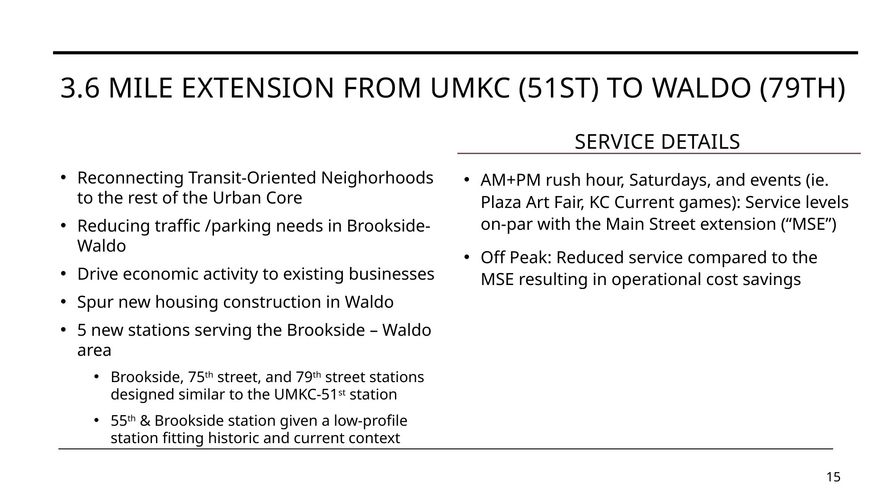
Read slide text
3.6 MILE EXTENSION FROM UMKC (51ST) TO WALDO (79TH) SERVICE DETAILS • Reconnecting Transit-Oriented Neighorhoods • AM+PM rush hour, Saturdays, and events (ie. to the rest of the Urban Core Plaza Art Fair, KC Current games): Service levels • Reducing traffic /parking needs in Brookside- on-par with the Main Street extension (“MSE”) Waldo • Off Peak: Reduced service compared to the • Drive economic activity to existing businesses MSE resulting in operational cost savings • Spur new housing construction in Waldo • 5 new stations serving the Brookside – Waldo area • Brookside, 75th street, and 79th street stations designed similar to the UMKC-51st station • 55th & Brookside station given a low-profile station fitting historic and current context
Slide 16
Dedicated Right-Of-Way Rail Line Running On The Ccrow
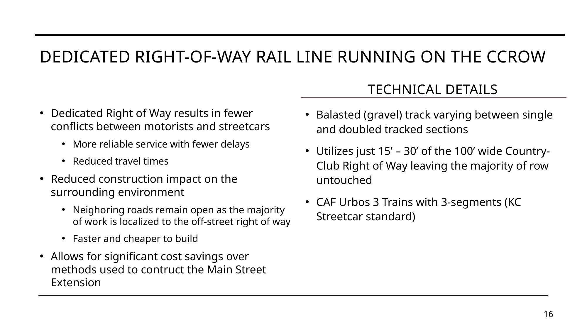
Read slide text
DEDICATED RIGHT-OF-WAY RAIL LINE RUNNING ON THE CCROW TECHNICAL DETAILS • Dedicated Right of Way results in fewer • Balasted (gravel) track varying between single conflicts between motorists and streetcars and doubled tracked sections • More reliable service with fewer delays • Utilizes just 15’ – 30’ of the 100’ wide Country- • Reduced travel times Club Right of Way leaving the majority of row • Reduced construction impact on the untouched surrounding environment • CAF Urbos 3 Trains with 3-segments (KC • Neighoring roads remain open as the majority of work is localized to the off-street right of way Streetcar standard) • Faster and cheaper to build • Allows for significant cost savings over methods used to contruct the Main Street Extension
Slide 17
Maintains And Upgrades The Trolley Track Trail
Read slide text
MAINTAINS AND UPGRADES THE TROLLEY TRACK TRAIL • Improved drainage and lighting • Making the trail usable longer each day, for more days of the year • Safer road crossings • Raised pedestrian crosswalks with improved signage • Increases driver awarness of crossings and reduces the risk and speed of collisions • Security • Blue Light System at all stations and along the route • Allows Pedestrians and Streetcar riders to call for medical or security services without the need for a cell phone • Commonly utilized on college / corporate campuses and trails
Slide 18
Financial Plan - Construction
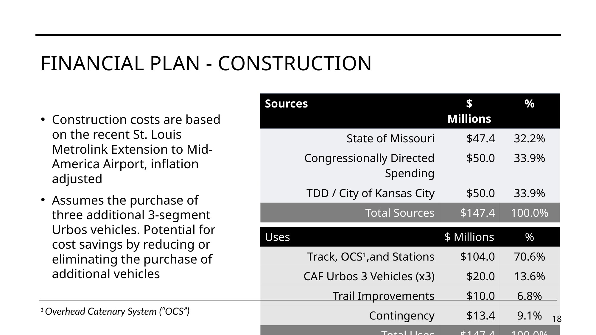
Read slide text
FINANCIAL PLAN - CONSTRUCTION Sources $ % • Construction costs are based Millions on the recent St. Louis State of Missouri $47.4 32.2% Metrolink Extension to Mid- Congressionally Directed $50.0 33.9% America Airport, inflation Spending adjusted TDD / City of Kansas City $50.0 33.9% • Assumes the purchase of three additional 3-segment Total Sources $147.4 100.0% Urbos vehicles. Potential for Uses $ Millions % cost savings by reducing or eliminating the purchase of Track, OCS1,and Stations $104.0 70.6% additional vehicles CAF Urbos 3 Vehicles (x3) $20.0 13.6% Trail Improvements $10.0 6.8% 1 Overhead Catenary System (“OCS”) Contingency $13.4 9.1% 18
Slide 19
Financial Plan – Annual Operations
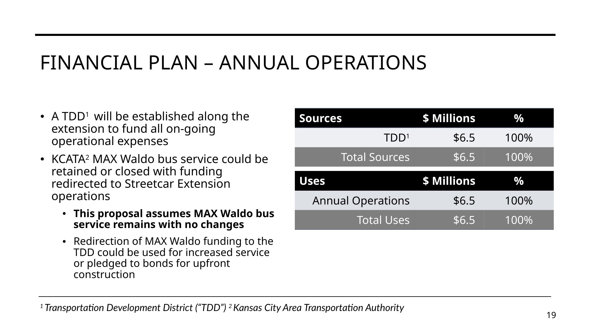
Read slide text
FINANCIAL PLAN – ANNUAL OPERATIONS • A TDD1 will be established along the Sources $ Millions % extension to fund all on-going operational expenses TDD1 $6.5 100% • KCATA2 MAX Waldo bus service could be Total Sources $6.5 100% retained or closed with funding redirected to Streetcar Extension Uses $ Millions % operations Annual Operations $6.5 100% • This proposal assumes MAX Waldo bus service remains with no changes Total Uses $6.5 100% • Redirection of MAX Waldo funding to the TDD could be used for increased service or pledged to bonds for upfront construction 1 Transportation Development District (“TDD”) 2 Kansas City Area Transportation Authority
Slide 20
Financial Plan – Tdd
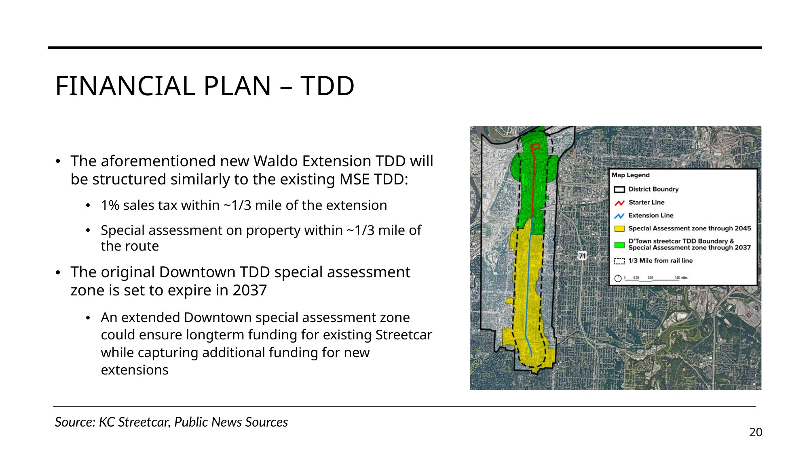
Read slide text
FINANCIAL PLAN – TDD • The aforementioned new Waldo Extension TDD will be structured similarly to the existing MSE TDD: • 1% sales tax within ~1/3 mile of the extension • Special assessment on property within ~1/3 mile of the route • The original Downtown TDD special assessment zone is set to expire in 2037 • An extended Downtown special assessment zone could ensure longterm funding for existing Streetcar while capturing additional funding for new extensions Source: KC Streetcar, Public News Sources
Slide 21
Iv. Additional
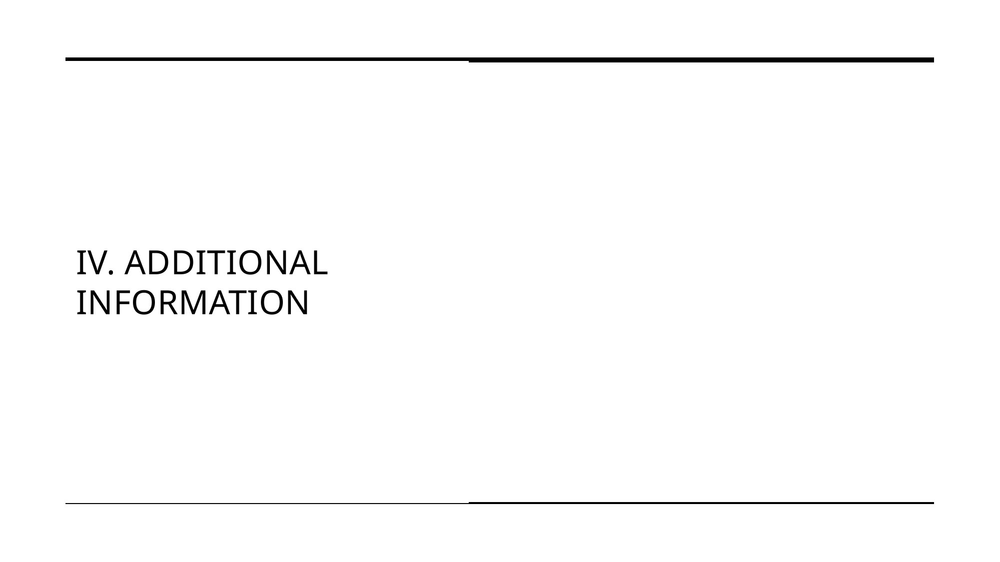
Read slide text
IV. ADDITIONAL INFORMATION
Slide 22
Historic Country Club Line Stations
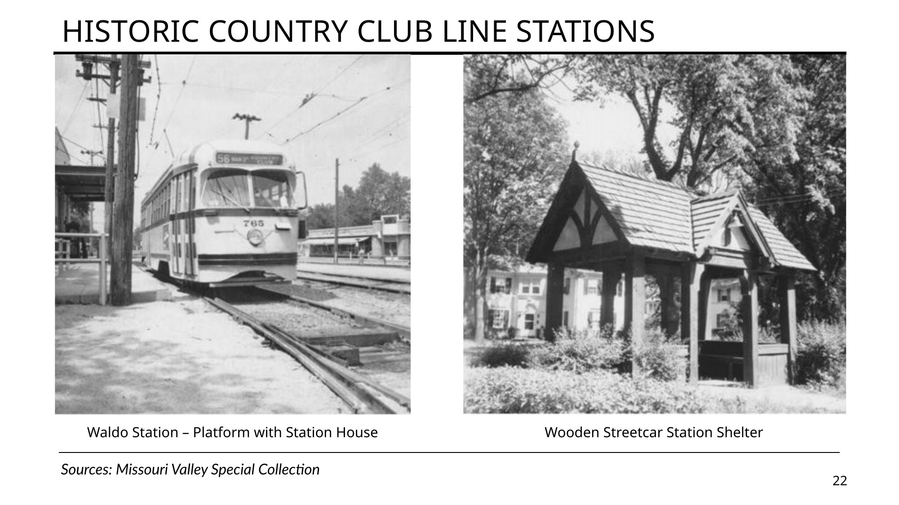
Read slide text
HISTORIC COUNTRY CLUB LINE STATIONS Waldo Station – Platform with Station House Wooden Streetcar Station Shelter Sources: Missouri Valley Special Collection
Slide 23
Historic Country Club Line Stations
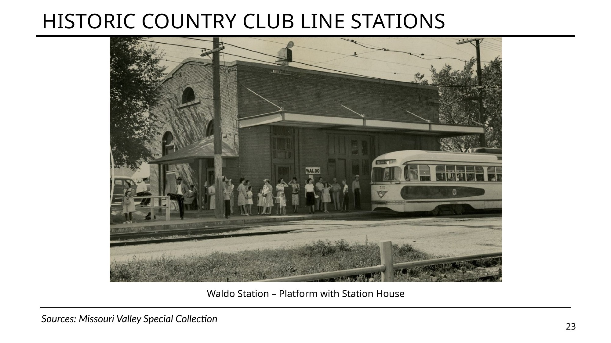
Read slide text
HISTORIC COUNTRY CLUB LINE STATIONS Waldo Station – Platform with Station House Sources: Missouri Valley Special Collection
Slide 24
Historic Local Examples Of Ballasted Track
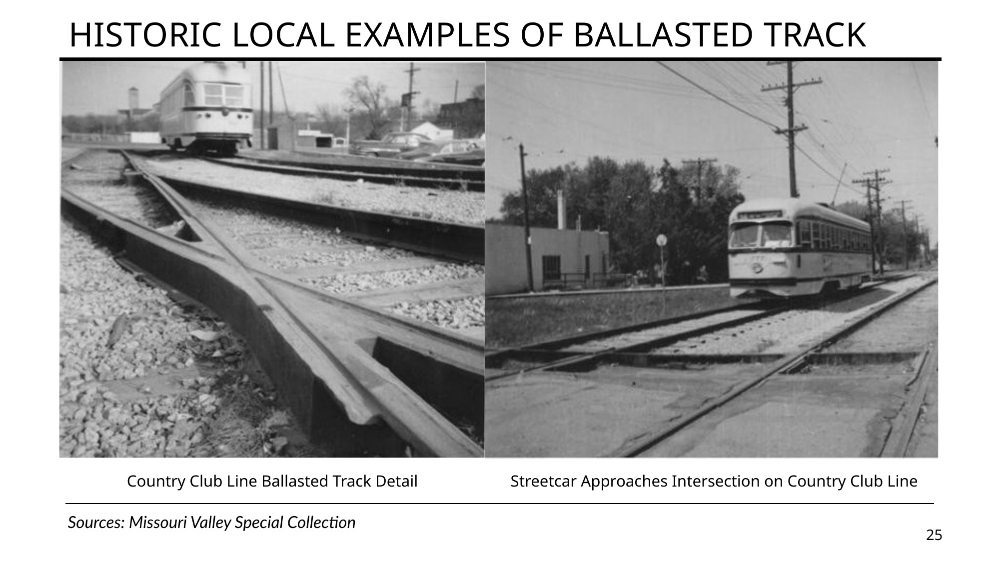
Read slide text
HISTORIC LOCAL EXAMPLES OF BALLASTED TRACK Country Club Line Ballasted Track Detail Streetcar Approaches Intersection on Country Club Line Sources: Missouri Valley Special Collection
Slide 25
Historic Local Examples Of Dedicated Right Of
Read slide text
HISTORIC LOCAL EXAMPLES OF DEDICATED RIGHT OF WAY Country Club Line Line Running In A Park Like Setting Swope Park Line Running In A Tree Shaded, Dedicated ROW Sources: Missouri Valley Special Collection
Slide 26
Modern Examples Of Dedicated Right Of Way
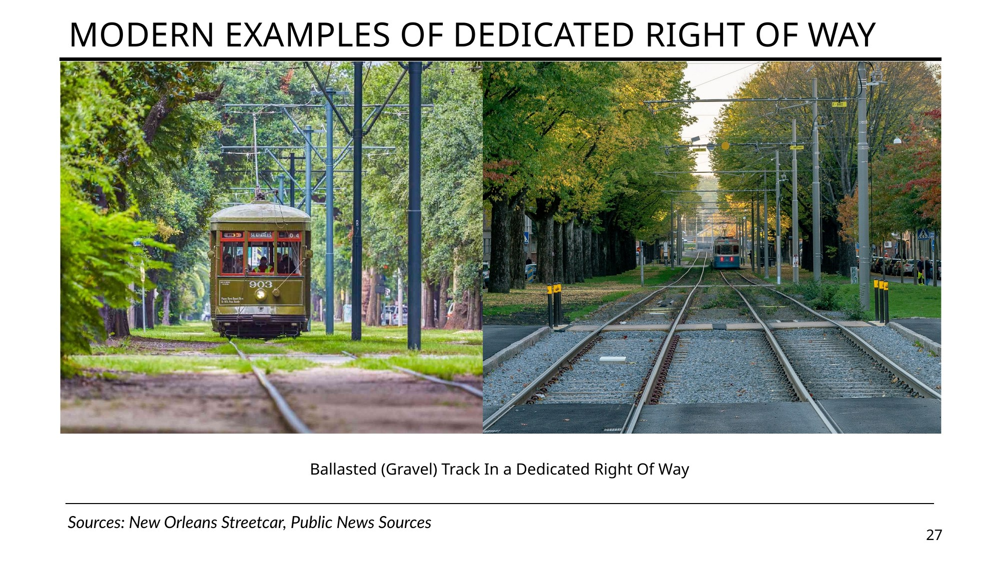
Read slide text
MODERN EXAMPLES OF DEDICATED RIGHT OF WAY Ballasted (Gravel) Track In a Dedicated Right Of Way Sources: New Orleans Streetcar, Public News Sources
Slide 27
Thank You
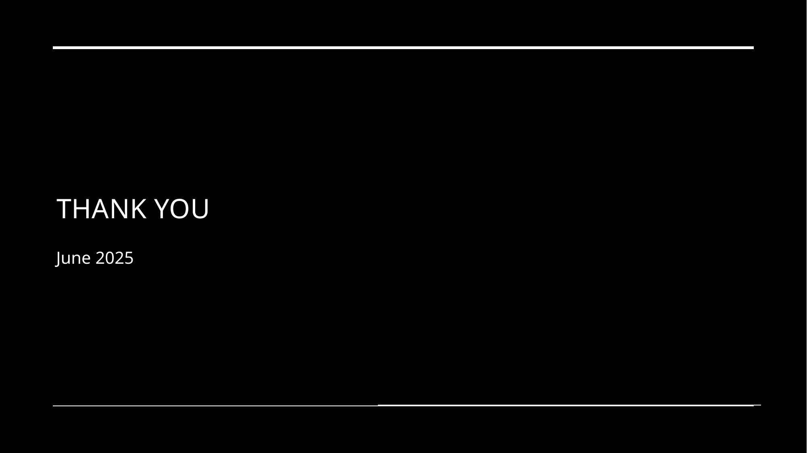
Read slide text
THANK YOU June 2025